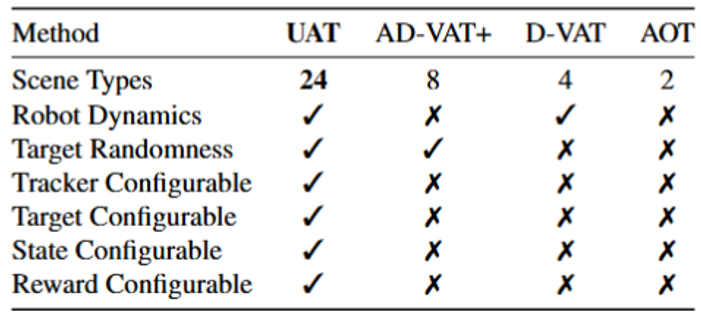
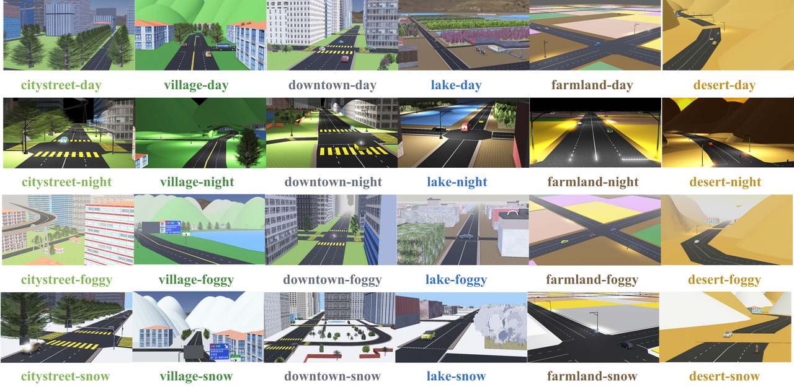

VAT Benchmark 介绍
针对问题
VAT(Visual Active Tracking) 任务同时建模视觉跟踪和控制，对于部署在现实场景中更简洁有力。针对这个任务，我们提出使用强化学习的方法来解决。
|
现有方法 |
RL方法 |
| 特点 |
直接串联VT模型和控制模型(simask + PID) |
使用MDP将视觉和控制同时建模，单模型解决 |
| 对比1 |
VT模型的延迟带来控制输入的滞后，甚至导致控制器发散 |
视觉和控制模型同步计算，无控制输入滞后 |
| 对比2 |
控制模型对参数较敏感，需要对每个场景微调参数 |
控制模型具有更高的鲁棒性，可以适应多种场景 |
环境需求
| 真实性 |
多样性 |
不可获取的变量 |
| 建模真实环境的多样性，丢弃真实场景不可获取的变量 |
多场景，多种tracker和target，多传感器 |
target相对于tracker的位置，速度，加速度 |

|

|
Benchmark呈现

多场景高保真仿真环境
| 6种场景+4种天气 |
复杂场景设计 |
真实的动力学模型 |
| 测试场景 泛化和域泛化能力 |
包括树遮挡, 隧道,红绿灯,人行道等常见元素 |
利用webots 真实的动力学引擎 |
| 真实的Target管理 |
多样Target |
并行训练 |
| 接入交通 仿真器SUMO统一管理车辆， 确保真实性和随机性 |
预设24种可选target,支持自主模型接入 |
可以单场景并行训练 |
State可配置
| 多样性 |
便捷性 |
| 提供了现实中常见的传感器，如IMU，加速度计，陀螺仪，激光雷达等 |
通过JSON文件快速配置 |
Reward构建
| 现有方法 |
本文方法 |
| 利用Target相对于Tracker坐标直接构建Reward，如$$r=A-\left(\frac{1}{c}\sqrt{x^{2}+(y-d)^{2}}+\lambda|\omega|\right )$$局限性为，若能用相对坐标直接构造Reward,则一个PID就可以无差跟踪,图像信息没有必要。 |
本文方法:只在图像层面构造reward，$$r=\tanh(\alpha(1-x)^3),x=\frac{l_{IP}}{l_{IE}}$$，与真实情况相符。 |

方法与实验结果
🍔 Baseline Methods
- Backbone: CNN+LSTM+A3C算法，LSTM相当于Dynamics Model
- 问题1: A3C算法的异步更新机制会导致算法快速收敛到单一动作分布，停止探索
- 问题2: One Stage的强化学习训练，智能体任务理解有困难，难以收到最优解
📌 Ours: CL + PPO
- CL： 两阶段课程学习，第一阶段在视觉简单的情况下训练Agent的任务理解，第二阶段在任务理解的基础上泛化复杂视觉能力
- PPO： 采用同步算法会带来更稳定的模型学习过程，且速度并不慢于A3C

CL 2 Stages示意图

初步实验结果
未来工作
- 未来状态推演：智能体在跟踪全过程对目标未来状态进行演化
- 目标：克服遮挡干扰，提升可解释性

时序决策初步构想
| 智能体场景和域泛化性 |
多传感器融合，多智能体协作 |
真机部署和迁移 |
| 场景与域泛化：智能体实现直接的跨场景泛化和跨天气情况(域)的泛化 |
多传感器：增加传感器以提升无人机在避障，3维空间感知任务上的性能 |
真机迁移：在真实的多场景多天气状况验证智能体的鲁棒性 |
| 目标：提升跨场景跨域性能，TTA+强化学习 |
多智能体协作：多无人机进行联合探索和跟踪，提升感知效率 |
目标：能简化Sim2Real流程，适配多飞控部署 |